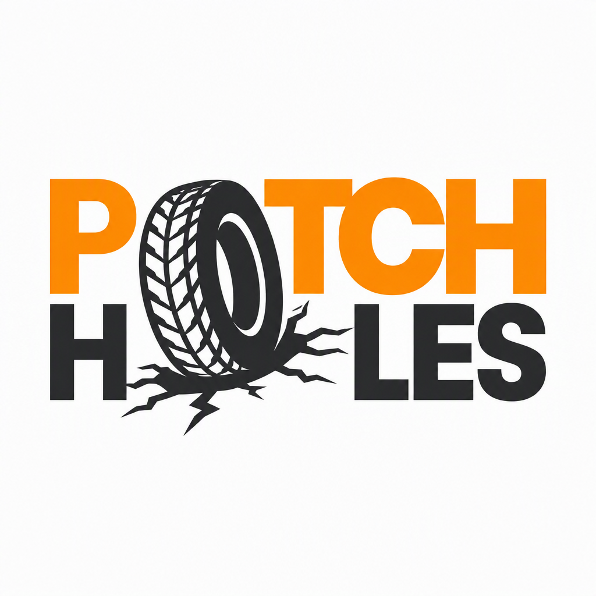

Reporting potholes in Potchefstroom was slow and inconvenient. Citizens had few ways to report, reports mostly went to the municipality, information wasn't structured enough to track, and there was little communication between citizens, repair organisations and other stakeholders. A non-profit organisation needed a single system to bring this together.
I wrote our project document and delivered both of our presentations. On the system itself, I worked on the user account features: the edit-profile form, account deletion, input validation and adding sample data to the database.
We worked through three phases of the Systems Development Life Cycle. In the project proposal we defined the problem, objectives, scope, stakeholders, constraints and risks, and prepared a schedule and a budget estimate of R246,160. In requirements analysis we documented functional and non-functional requirements (using the PIECES framework), user roles and input, processing and output specifications, gathered user needs through questionnaires, and compared three possible solutions in a feasibility analysis. In the modelling phase we refined the scope and produced use-case diagrams, data models and process models for citizen management, repair partner management, donations and reporting.
The proposed system covers citizen, repair partner and donor records, pothole reports with severity levels and optional photos, assigning cases to repair partners, tracking case status, recording donations, and reports on resolved potholes over a chosen period.
In the second half of the project (CMPG 223) the team built the system as an ASP.NET web application in Visual Studio 2019, written in C# and SQL, on a SQL Server database. It covers maintaining repair partners and donors, reporting a pothole case, assigning a case to a repair partner, closing it, receiving donations and requesting reports.
While building the user account features, we added input validation so that bad data never reached the database. Email addresses are checked to make sure they're in a valid format, and passwords have to meet strength requirements before an account can be created or updated.
The team delivered a working ASP.NET web application backed by a SQL Server database, and the final database earned 91%.
← Back to projects